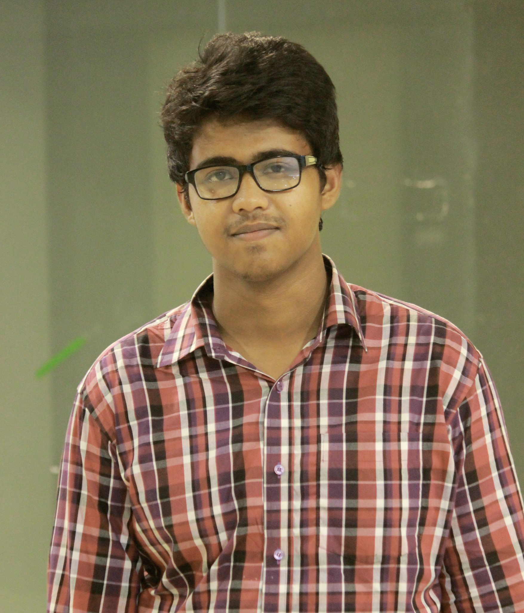

Hi
My name is Afranul Haque
I am a passionate programmer and full stack developer having an experience of building Web and Mobile Applications with
django, ASP.net, flutter, php and some other libraries and frameworks. I demonstrate myself as a quick learner while working
in multiple platforms and have strong efficiency at teamwork. I am always dedicated to my work and focused on improving my
technological skills.
- Ahsanullah University of Science & Technology, Dhaka, Bangladesh
-
Bachelor of Science in Computer Science & Engineering (2016-present)
- Notre Dame College Dhaka
-
Higher Secondary Examination, Dhaka Board, 2015
- Pabna Zilla School Pabna
-
Secondary School Examination, Rajshahi Board, 2013